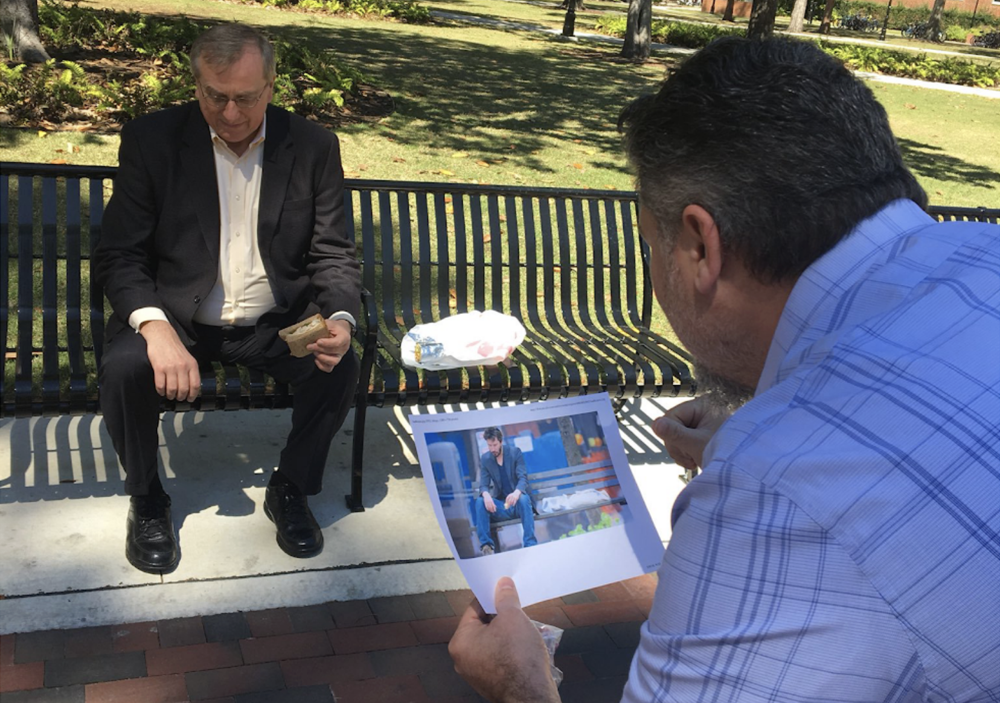
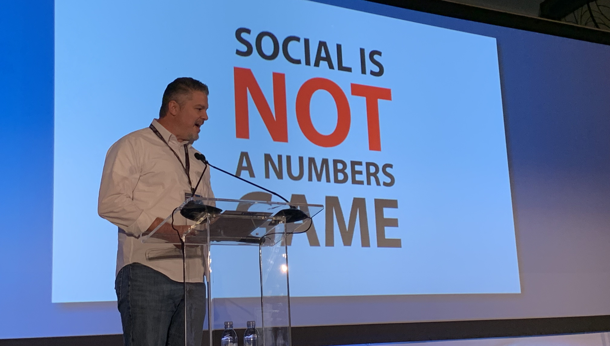
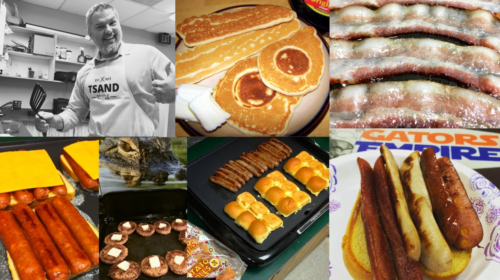

Based social media pro.
Based in Menlo Park, California.
I wasn't sure what to put here. You should already have my resume, so instead of adding noise, let's find out if I'm a good fit or a red flag?
Things I won't do:
Things I will do:

Let numbers motivate not dictate
I love analytics, especially real-time data for agility and benchmarking for growth. But I also trust intuition and the magic of the unexpected. TikTok is a perfect example — we were there before our community knew it existed. The early numbers said abandon it. The gut said give it time. We stayed, we learned, we became the university others were chasing.

My philosophy... a personal manifesto? Nah, just vibes.
#winning
I like to play. And I play to win. It's not just achieving unrealistic goals at work, it's the little things like chicken wings. I've entered and won THE BLAZIN' CHALLENGE® at Buffalo Wild Wings twice (once during a layover at ATL before catching a two-hour flight, if I land an interview I can tell you all about it).

Food for thought
I purchased an #officegriddle in 2011 and quickly realized it unlocked new collaborations at work. Starting the day with a team breakfast, celebrating victories with quesadillas or just making someone's day a bit brighter with an unexpected grilled cheese... the communal nature of sharing a meal has a lot in common with great social: it builds trust, connection and cooperation.

Career
By the numbers
Selected presentations